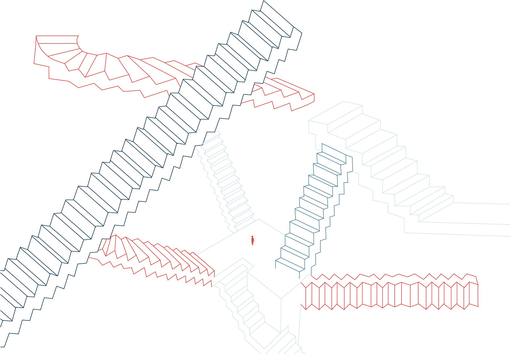
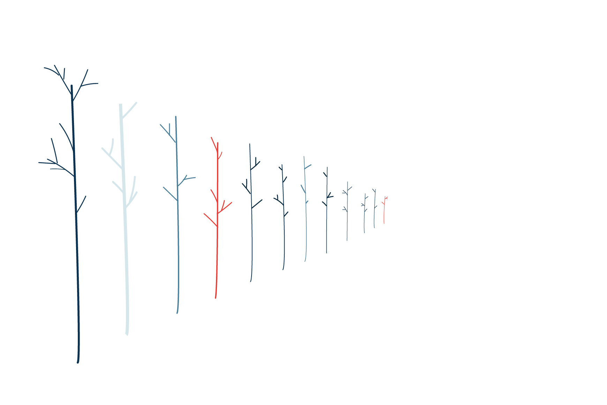
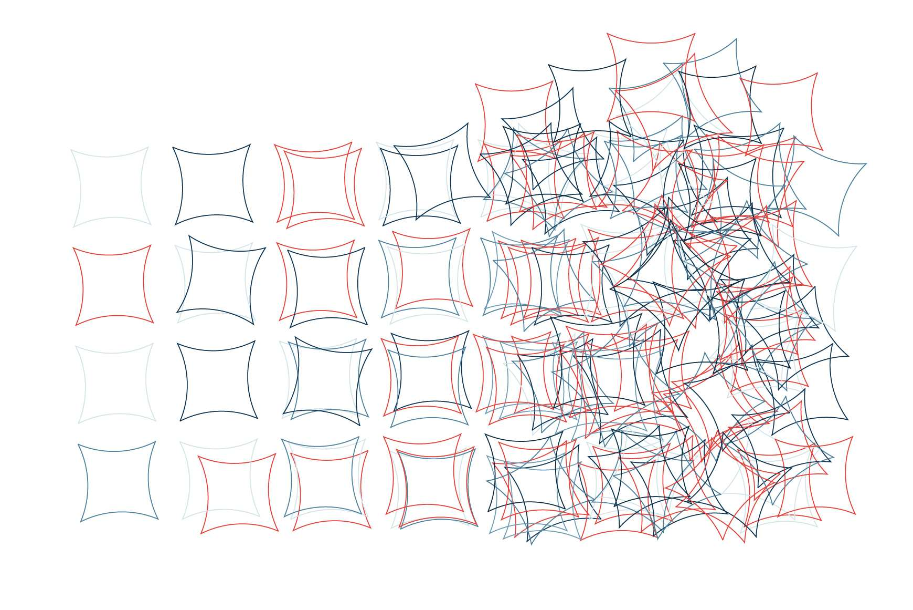
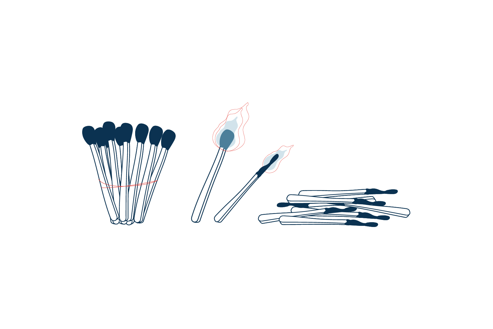
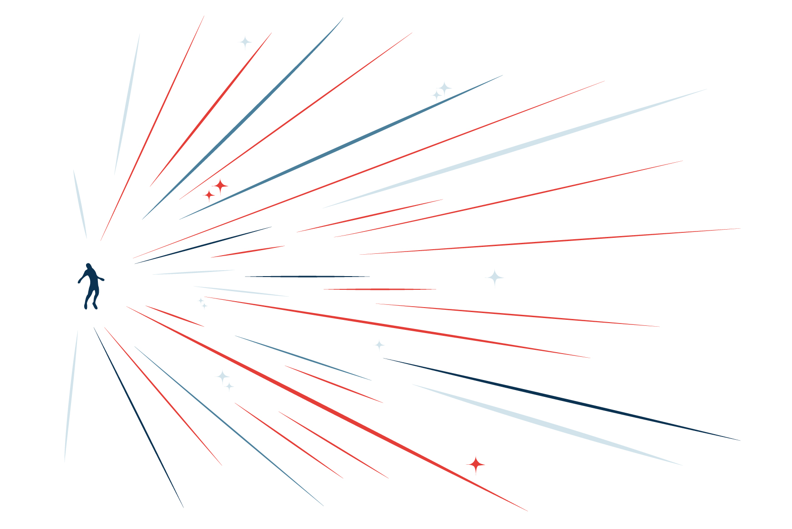

About me
Hi, I’m Fai Mehjazi, a graphic design student at AP high school.
I simplify complexity through observation and logical thinking. My work is soft and expressive, using line, rhythm and form to communicate subtle but powerful emotions.
I’m currently exploring how personal data can be visualized through line-based illustrations, turning habits and observations into meaningful, visual stories.
Lines about me

A week of Confusion
A week of Peace


A week of Anxiety
A week of Burnouts


A week of Excitement